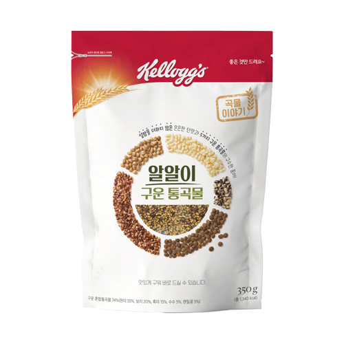
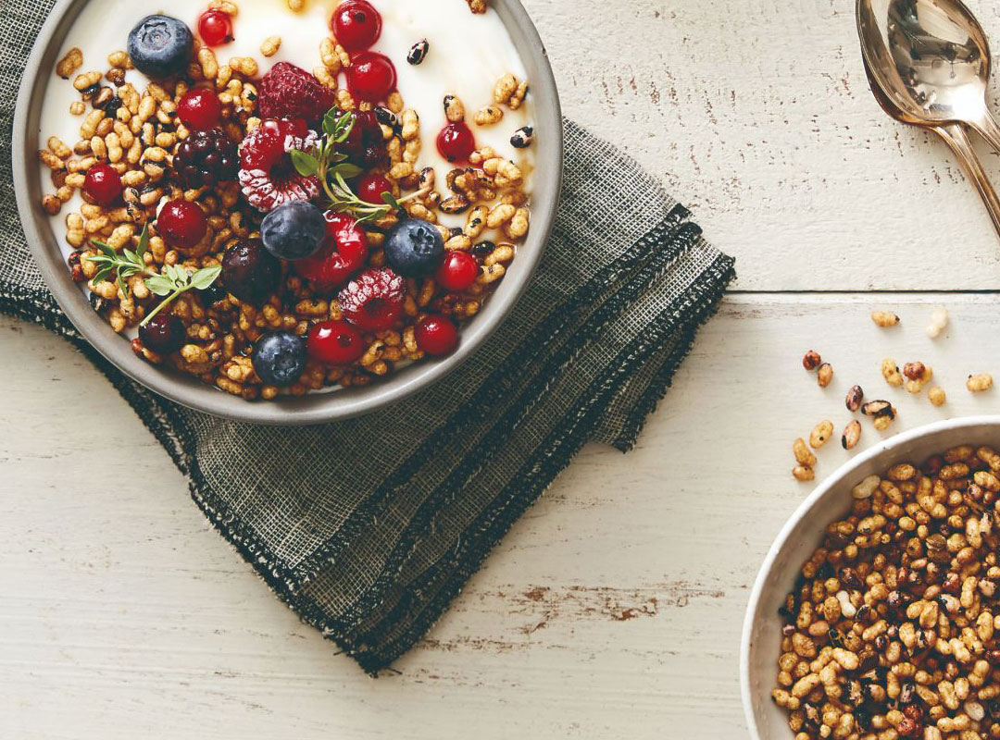

설탕을 더하지 않은 은은한 단맛과 5가지 구운 통곡물의 구수한 풍미! 알알이 구운 통곡물 풍부한 영양이 그대로 들어있는 5가지 통곡물을 8시간 이상 불리고 쪄서 부드럽고, 씹을수록 더욱 고소하게 만들었습니다. 설탕을 더하지 않아 은은한 단맛에 구운 곡물의 구수함까지 이제 알알이 구운 통곡물로 통곡물을 맛있게 즐겨보세요!

GRAIN STORY
GRAIN STORY
GRAIN STORY
GRAIN STORY
원재료명
구운 혼합통곡물[현미(국내산), 보리(국내산), 흑미, 수수, 렌틸콩], 말토올리고당, 당밀, 프락토올리고당, 볶음현미분말(국내산), 볶음검은약콩분말(국내산), 효소처리스테비아, 혼합제제[d-토코페롤(혼합형), 글리세린, 글리세린지방산에스테르]
알러지정보• 대두 함유 • 이 제품은 밀, 우유, 아몬드, 쇠고기가 포함된 제품과 같은 제조시설에서 제조하고 있습니다.
주의사항• 이 제품은 곡류 제품으로 습기나 해충의 영향을 받기 쉬우므로 개봉 후에는 반드시 밀봉하여 건조하고 서늘한 곳에 보관하십시오. • 본 제품의 특성상 곡류 등 원료에서 기인한 단단한 부분이 발견될 수 있으므로 취식 시 치아가 상하지 않도록 주의하여 주십시오.
성분

| 성분 | 100g당 성분 기준치에 대한 비율 |
|---|---|
| 나트륨 | 15mg(1%) |
| 탄수화물 | 85g(26%) |
| 식이섬유 | 6g(24%) |
| 당류 | 11g(11%) |
| 지방 | 3.2g(6%) |
| 트랜스지방 | 0g(0%) |
| 포화지방 | 0.7%(5%) |
| 콜레스테롤 | 0g(0%) |
| 단백질 | 6.5g(12%) |
1일 영양성분 기준치에 대한 비율(%)은 2,000kcal 기준이므로 개인의 필요 열량에 따라 다를 수 있습니다.